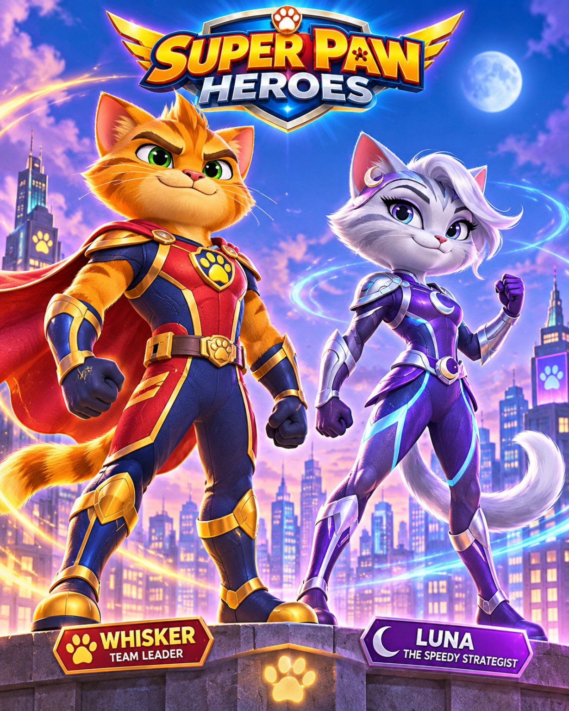

Welcome to Pawtopia
A town full of curious cats, crystal caverns, and small adventures. Meet Whisker and Luna, then choose where to start.
Open Pawtopia
Adopt a cat
Visit the Companion Cottage to choose a cat. The cottage is home base for care, equipment, and training. Choose a companion before entering the Battle Arena so you can fight with that cat and its trained stats.
Visit the Companion CottageTest your skills in the arena
Start against a weaker opponent and work up to tougher challengers. Train your companion to improve its stats and level up to unlock its moves. Ranked matchmaking looks for a human opponent and can offer a practice bot when the queue is quiet.
Open the Battle ArenaPlay in the Games Room
Catch moving lanterns in Lantern Festival or repeat crystal patterns in Crystal Echo. Play for a personal best and earn Pet Upgrade Points through eligible milestones. The Games Room also links to Super Paw Heroes side-scrolling adventures.
Explore the Games RoomReturn to your existing pets
The links in this guide open the existing Pawtopia game site. Use the browser you normally play in to open your saved pets, or sign in there with your Pawtopia account for online play.
Open Pawtopia save backups